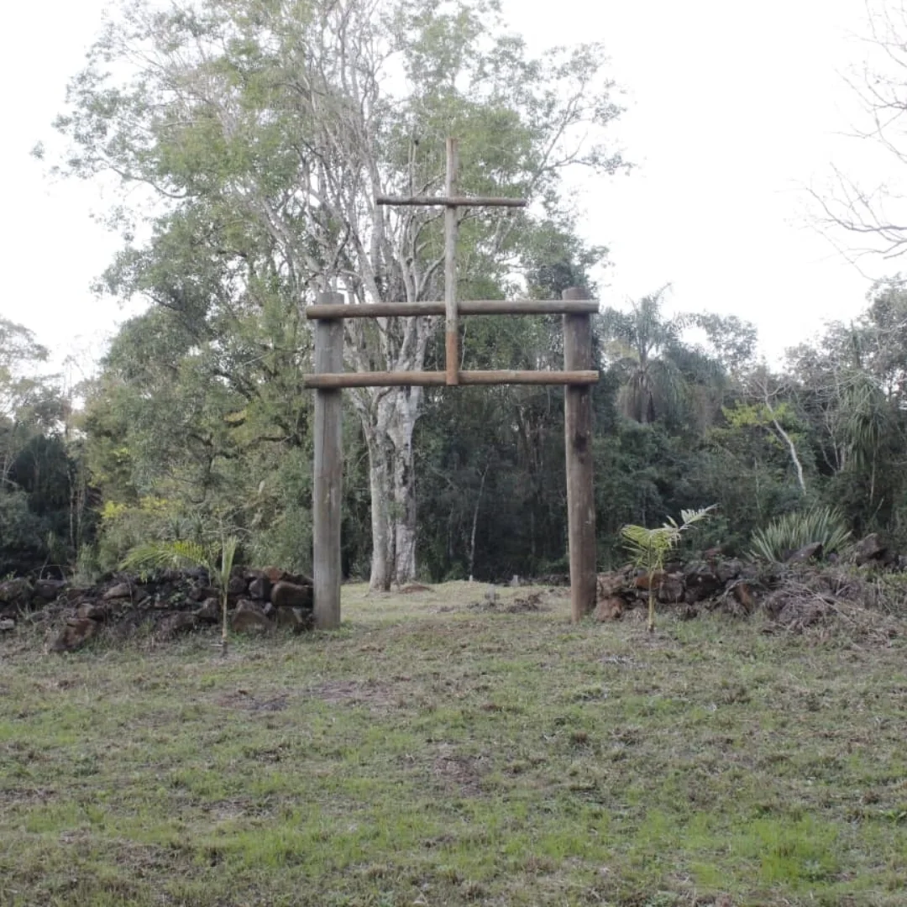

Objetivo
A preservação da cultura local é fundamental para manter viva a identidade histórica e social de uma comunidade. Este projeto analisa como a digitalização pode contribuir para a conservação da história e da cultura do município de Concórdia, utilizando recursos como sites, modelagem tridimensional, realidade aumentada, acervos digitais e plataformas interativas.
Benefícios da Digitalização
Preservação Permanente
Mesmo com alterações físicas, desgastes naturais ou mudanças urbanas, as informações culturais permanecem armazenadas digitalmente para futuras gerações.
Democratização do Acesso
Permite que estudantes, pesquisadores, turistas e moradores conheçam a cultura local de maneira prática e interativa, sem barreiras geográficas.
Educação Patrimonial
Os recursos digitais despertam maior interesse do público jovem e ampliam as formas de aprendizagem sobre a história do município.
Registro Detalhado
Possibilita o registro minucioso de monumentos, construções históricas, objetos, documentos e manifestações culturais da comunidade.
Valorização Cultural
Fortalece a identidade cultural da comunidade e amplia as possibilidades de divulgação da história local no século XXI.
Sustentabilidade
Estratégia eficiente e sustentável para preservar e compartilhar a cultura concordiense, unindo tradição e inovação.
Escopo Tecnológico
Sites Informativos
Plataformas web dedicadas ao patrimônio cultural de Concórdia, com conteúdo histórico e interativo.
Modelagem 3D
Representações tridimensionais de espaços e monumentos históricos, como o Cemitério dos Caboclos.
Realidade Aumentada
Experiências imersivas que permitem explorar patrimônios históricos de forma inovadora e engajante.
Acervos Digitais
Bibliotecas digitais organizadas contendo documentos, imagens e informações sobre a história local.
Plataformas Interativas
Ambientes virtuais que permitem navegação e exploração de informações culturais de forma dinâmica.
Navegação Virtual
Tours virtuais de espaços históricos, permitindo acesso remoto a patrimônios culturais.
Patrimônio em Foco
O projeto destaca a importância de documentar e preservar locais significativos para a história de Concórdia, como o Cemitério dos Caboclos, localizado no campus do Instituto Federal Catarinense (IFC) – Campus Concórdia. Este espaço representa uma importante conexão entre a tradição local e o patrimônio imaterial da comunidade.
Locais Preservados
⚙️ Projeto em Desenvolvimento
Este projeto está em fase de desenvolvimento. Novos locais históricos serão adicionados conforme a documentação avançar.

Cemitério dos Caboclos
IFC Campus Concórdia
Espaço histórico que representa a tradição e identidade cultural de Concórdia. Documentado com modelagem 3D e realidade aumentada para preservação digital permanente.
🔄 Próximos Locais a Documentar
Com a expansão do projeto, novos patrimônios culturais e históricos de Concórdia serão preservados digitalmente, incluindo:
Patrimônio Arquitetônico
Construções históricas do centro
Acervo Documental
Documentos e fotografias
Manifestações Culturais
Eventos e tradições locais
Equipe do Projeto
Sobre
Projeto SEPE — Ensino Médio Informativo de
Ciências Humanas
Instituto Federal de Educação, Ciência e Tecnologia
Catarinense
Campus Concórdia — Santa Catarina, Brasil
Este trabalho demonstra que a digitalização representa uma importante ferramenta para a conservação cultural de Concórdia, unindo tradição e inovação. A aplicação dessas tecnologias contribui para a valorização do patrimônio material e imaterial da cidade, fortalece a identidade cultural da comunidade e amplia as possibilidades de divulgação da história local no século XXI.